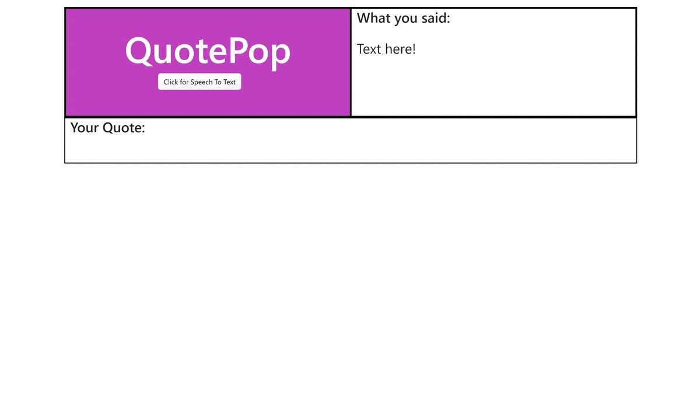

QuotePop
When you click on button and speak to it, the app listens to you and speaks out a relevant quote for you!
Description: Web app that analyzes a real-time speech and generates a pop culture quote that is relevant to what is being discussed
Technologies: Vanilla JavaScript, Flask, NLTK
Github RepoNU Eats

Description: Built a full-stack website for Northwestern students to help find restaurants in Evanston using Yelp Fusion API
Technologies: React, Express.js
Github Repo